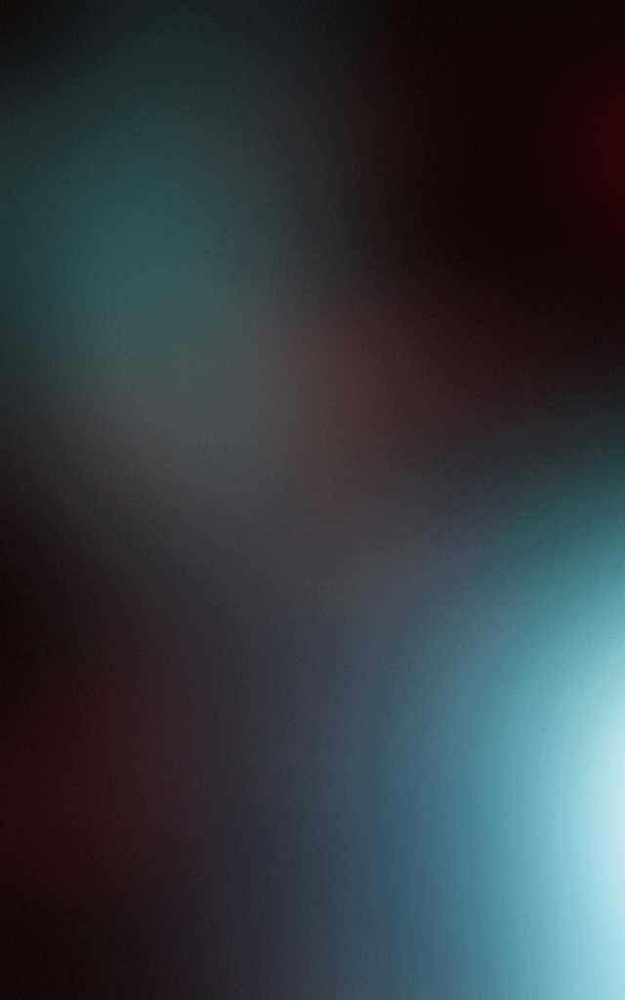

<!--
  Generated template for the StartPage page.

  See http://ionicframework.com/docs/components/#navigation for more info on
  Ionic pages and navigation.
-->
<ion-header class="bgtranslucent">

    <ion-navbar>
        <ion-title>Movies Google</ion-title>
    </ion-navbar>

</ion-header>


<ion-content>
    <!--  -->
    
    <ion-footer>
        <button ion-button full color="dark" (click)="openLogin()">
      LOGIN
    </button>

        <button ion-button full color="viol" (click)="openRegister()">
      REGISTER
    </button>
    </ion-footer>

</ion-content>